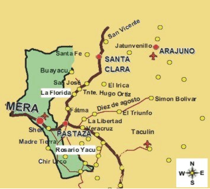
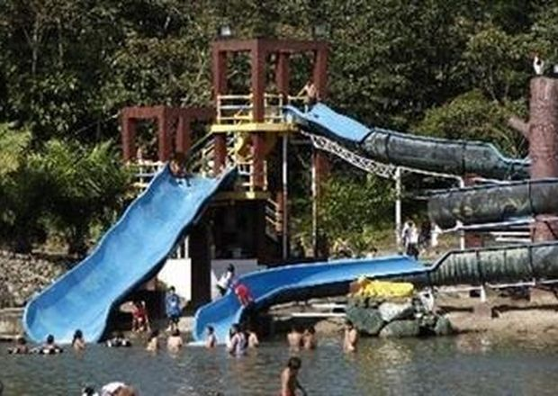

| CANTON MERA |
| El segundo cantón en crearse en la provincia de Pastaza, fue el cantón Mera, gestión que vio sus frutos el 11 de abril de 1967, fecha en la que se público su cantonización en el R. O. No. 103, Decreto No. 20, era en la presidencia Interina de la República del Dr. Otto Arosemena Gomes, papel decisivo jugo en esta gestión Francisco Salvador Moral, Legislador de la provincia, quien además ayudo a la instalación del primer Consejo Municipal, liderado por Luis Dávila Castillo.
El Registro Oficial No. 103, pública el 11 de abril de 1967, con el que se crea el cantón Mera, según el Decreto No, 20, dice lo siguiente: Que la parroquia Mera REUNE LOS REQUISITOS DETERMINADOS EN LA Ley Régimen Municipal, SEGUN LA Ley Especial de Oriente. Decreto Art. 1º.- Crease en la parroquia de Pastaza el nuevo Cantón denominado Mera, EL MISMO QUE ESTARA INTEGRADO POR LAS PARROQUIAS Mera que será la Cabecera Cantonal , Shell y Madre Tierra, siendo el territorio de este Cantón el comprendido por los linderos de las tres parroquias que lo integran. Art. 2º.- El presente Decreto empezara a regir desde la fecha de su publicación en el Registro Oficial. Dado en la Sala de Sesiones de la H. Asamblea Nacional Constituyente, en Quito , a los diez días del mes de abril de mil novecientos “setenta” y siete (error en el RO., lo correcto es sesenta y siete) (F.) Dr. Gonzalo Cordero Crespo, Presidente de la H. Asamblea Nacional C instituyente.- (f.)Eduardo Chiribota Cajiao, Secretario de la H. Asamblea Nacional Constituyente. Es copia, certifico.- El Secretario del H. Asamblea Nacional Constituyente. f.) Eduardo Chiriboga Cajiao. Límite del cantón.- Los limites e3l cantón Mera son los siguientes: AL NORTE: Con la provincia de Napo AL SUR: Con la provincia de Morona Santiago. AL ESTE: Con los cantones Pastaza y Santa Clara. Al OESTA: Con la provincia de Tungurahua. Superficie. El cantón Mera tiene una superficie aproximada de 518Km2. Y se encuentra ubicado al Oeste de la provincia de Pastaza. Cabecera Cantonal.- La cabecera cantonal del cantón Mera es la parroquia urbana Mera, que se encuentra a 17 Km de la ciudad de Puyo. Altitud y posición astronómica.- Mera se halla ubicada a 1.150 msnm; su posición astronómica es de 78o5’ de Longitud Occidental y a 1o30’ de Latitud Sur. Su población es.- De acuerdo al último censo realizado en el año 2001 por el INEC, en sus datos definitivos el cantón Mera en total tiene 8.088 habitantes, de los cuales 4.329 son hombres y 3.759 son mujeres, lo representa el 13,1% del total provincial; ha crecido en el último periodo intercensal 1990-2001, a un ritmo del 2,8% promedio anual. El 91,7% reside en el área rural, se caracteriza por ser una población joven ya que el 45,5% es menor de 20 años. Su densidad poblacional es de 15,6 habitantes por Km2. |

|